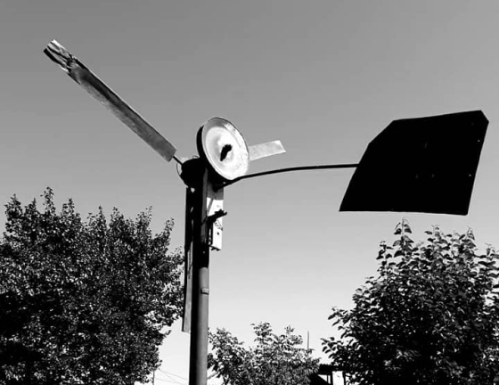

{% extends 'main/base.html' %}
{% block title %}
about
{% endblock %}
{% block content %}

"Мы с трудом уговорили хозяев, у которых арендовали ветряк для съёмок "Свет аке", оставить этот реквизит себе. Сейчас он в Кунтуу, важно возвышается над садом. И при малейшем ветре, издавая железный лязг, поворачивается к потоку воздуха. Правда, лопасти привязаны цепью. Как и в фильме, ветряк ждет своего часа, когда начнет давать свет.
Ненароком возникает мысль, а есть ли среди властьимущих те, кто думает как сельский электрик, мечтающий о Долине Ветряков.
Климатические условия нашей земли с её ущельями, наполненными ветрами, многочисленными горными реками и почти 247 солнечными днями в году, благоприятствуют созданию зеленой энергии.
Кыргызстан - страна с зеленой экономикой, а почему бы и нет?"
{% endblock %}